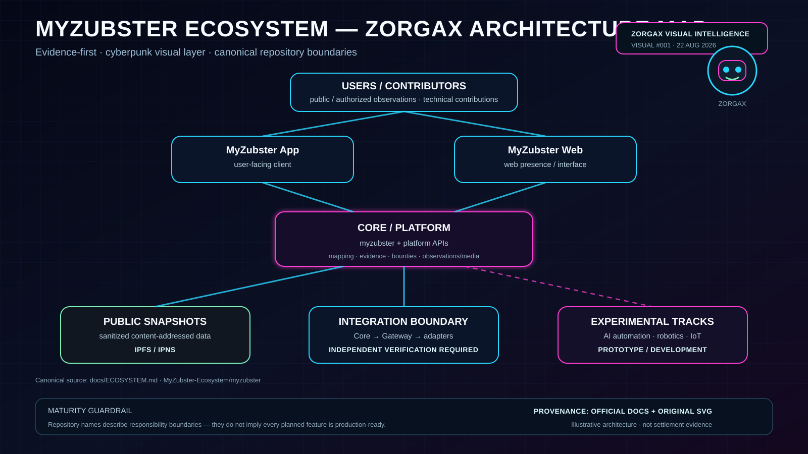
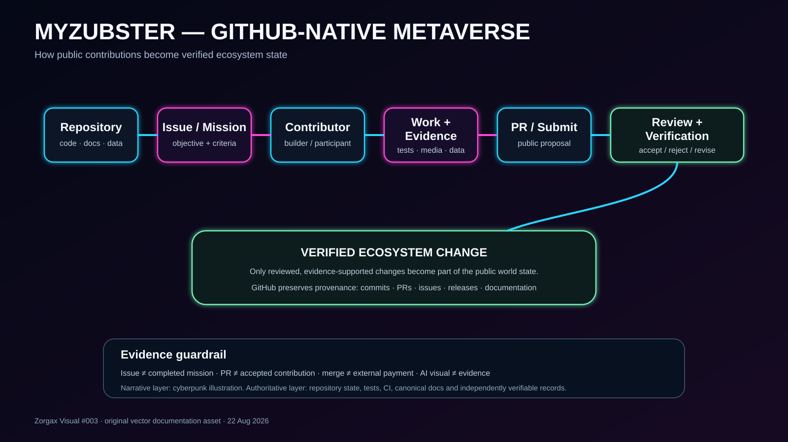

#001
Ecosystem Architecture

Core, App/Web, public snapshots, integration boundaries and experimental tracks.
ARCHITECTUREPROVENANCE
Open packageEvidence
Derived from canonical ecosystem documentation. Repository boundaries do not imply production maturity. The Upload Pack PNG is publicly versioned in MyZubster-Visual; the repository SVG remains the canonical documentation asset.
#002
Contributor → Evidence
Issue, authorized work, evidence/PR, review, verification, reward record and separate settlement.
CONTRIBUTORSBOUNTIES
Open packageEvidence
Based on the canonical bounty contract. PR, merge or reward record does not prove external payment.
#003
GitHub-Native Metaverse

Repository → mission → contributor → work + evidence → review → verified ecosystem change.
METAVERSEGITHUB-NATIVE
Open packageEvidence
Draft visual package. The model describes an architectural direction, not proof that every envisioned feature is production-ready.
#004
Maturity Map
Proposed, Experimental, Prototype, Development, Validated and Production vocabulary.
MATURITYSTATUS
Open canonical status vocabularyEvidence
The generated poster is illustrative. Individual component classifications require repository-specific verification.
#005
Public Repository Map
Clickable and searchable map of verified public MyZubster-Ecosystem repositories, grouped for navigation.
REPOSITORIESINTERACTIVE
Open interactive mapEvidence
Inventory is limited to repositories identified as public by the connected GitHub inventory on 2026-08-22. Private repository metadata is excluded.
#006
Contributor Journey
Discover → GitHub → Mission → Work → Evidence → Review → Verified Contribution → World State.
CONTRIBUTORSINTERACTIVE
Open interactive journeyEvidence
The flow describes the contribution lifecycle. Advancement to a verified state requires appropriate review/evidence; AI visuals remain illustrative.
#007
World State / Evidence Ledger
Searchable claim ledger with explicit PROPOSED, IN_REVIEW, VERIFIED, DEPLOYED and NOT_VERIFIED states.
WORLD STATEEVIDENCE
Open evidence ledgerEvidence
The initial ledger is seeded only from directly checked public GitHub sources. State strength is capped by the evidence source.
#009
Adoption Ladder
Discovery → interest → fork → contribution → integration → deployment → verified adoption.
ADOPTIONINTERACTIVE
Open adoption ladderEvidence
Discovery, indexing, a fork or a contribution do not by themselves prove deployment, institutional adoption or partnership.
ARCHIVE
Public Zorgax Image Library
1 reviewed architecture PNG plus 11 AI-generated narrative PNGs are now versioned in MyZubster-Visual and mapped back to canonical sources.
PUBLIC ASSETSPROVENANCENOT EVIDENCE
Open concept galleryGuardrail
Public GitHub hosting does not turn an illustrative image into evidence. The Metasploit image remains explicitly unverified / no affiliation.